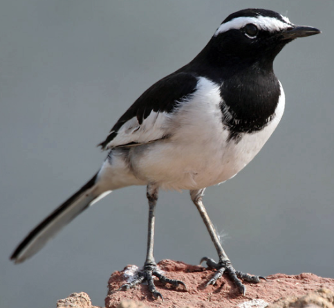

Betla National Park
Location : Located on the Chota Nagpur Plateau in the Latehar and Palamu district of Jharkhand
Established in : 1986
Area : 1315 km2
Flora : The forests of the park have a vast range of vegetation consisting of sal and bamboo as the
major components along with a number of medicinal plants.
Fauna : Predators include the sloth bear and panther, while scavengers include the wolf, jackal and
hyena. Other animals include large herds of gaur and chital, large families of langurs, rhesus monkeys, Indian giant
squirrels, mouse deer, sambhar deer, four-horned antelopes, nilgai, kakar, small Indian civets, ant eating pangolin,
porcupine and mongoose.
Elephants in large numbers are seen mostly between the end of the monsoon season, to the time when water holes begin to
dry in March.
Birds include the hornbill, peafowl, red jungle fowl, black partridge, white-necked stork, black ibis, swamp grey,
quail, pied hornbill, wagtail, harial, dove, drongo, crested serpent-eagle, forest owlet, papeeha, and other birds
usually found in dry deciduous forests. The Kamaldah lake attracts several varieties of water birds including the
common whistling, cotton teal, knob-billed duck, snipe and geese.
Features : Betla was one of the first national parks in India to become a tiger reserve under Project
Tiger, in 1974. The park features waterfalls and hot springs.

Betla National Park

Elephant

Wagtail